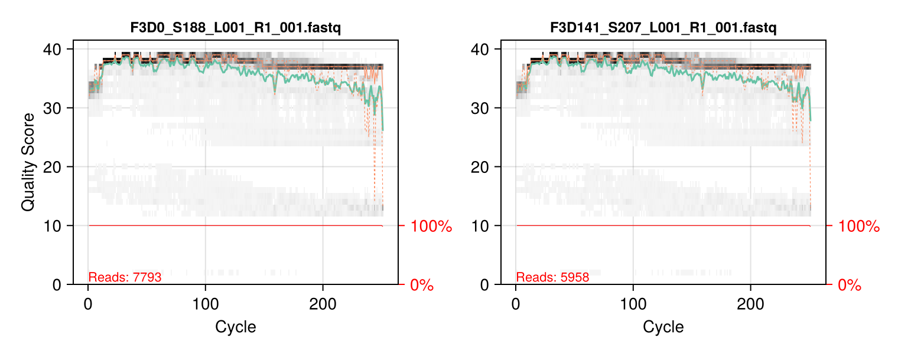
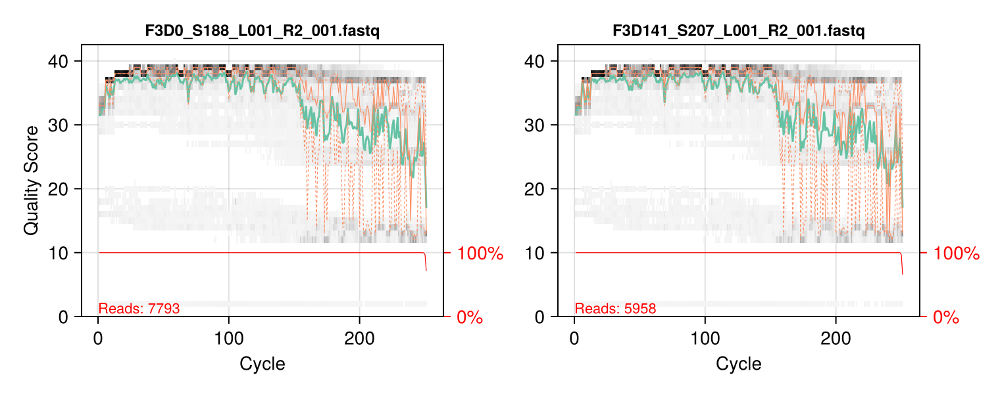
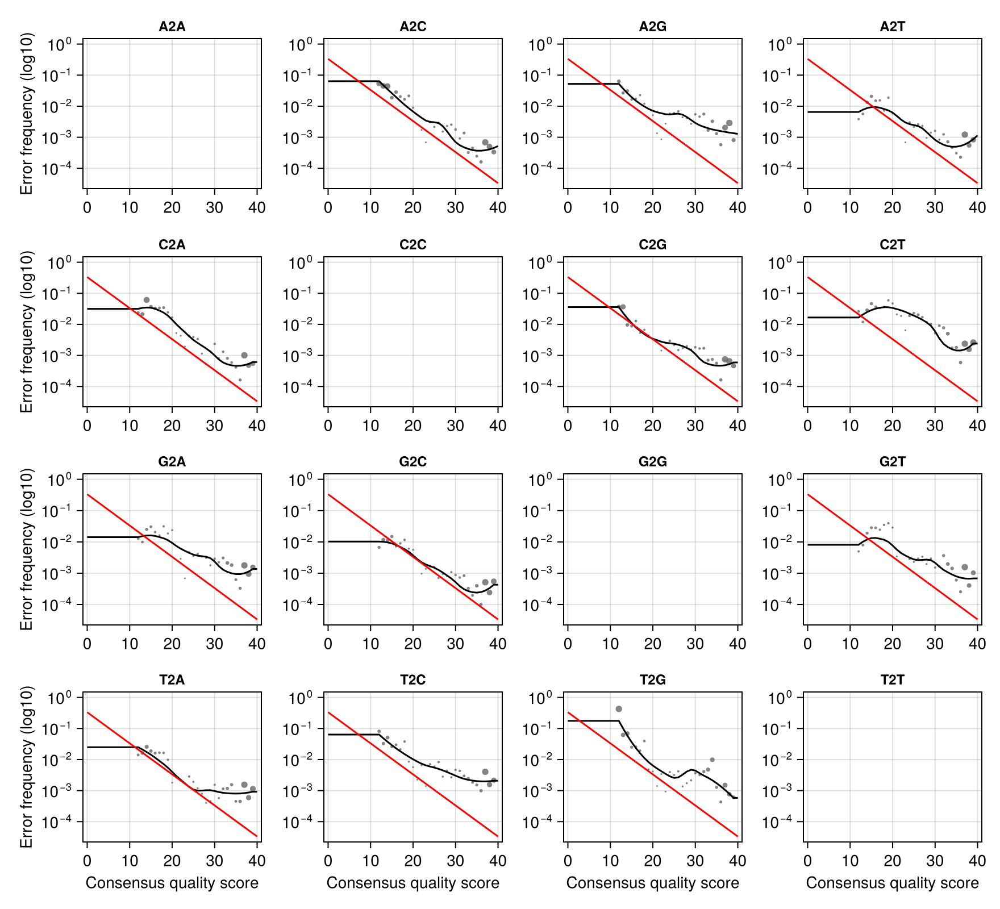
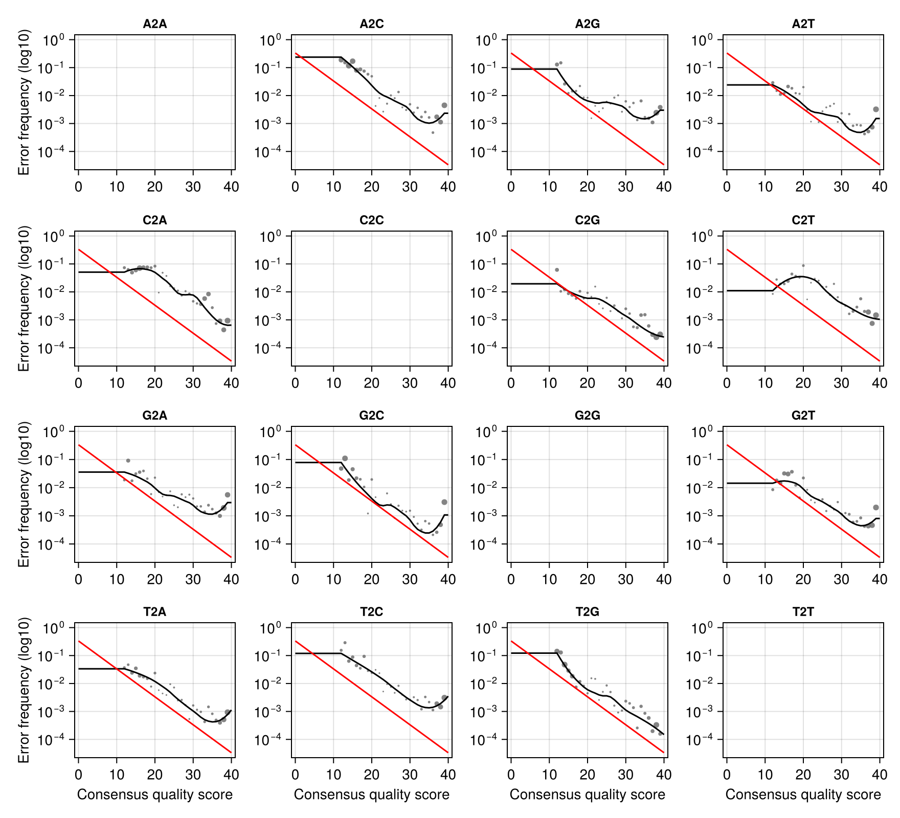
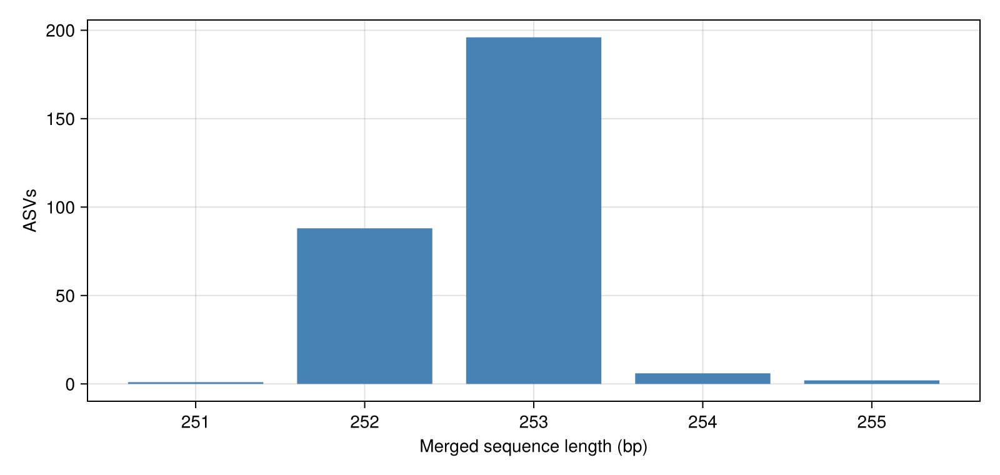
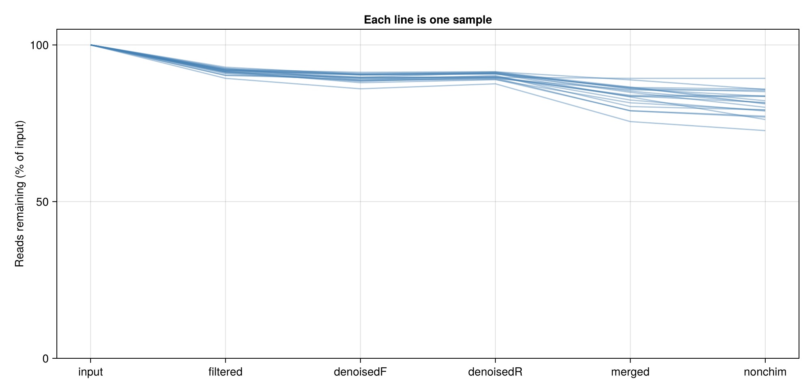
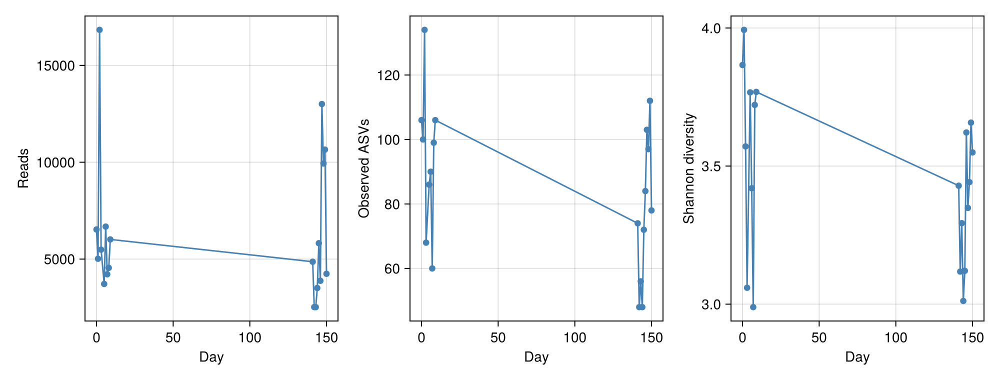

Tutorial: the DADA2 workflow
This tutorial follows the DADA2 pipeline tutorial step by step, in Julia. It turns paired-end Illumina MiSeq reads into a table of amplicon sequence variants (ASVs) and assigns them a taxonomy. Function names and options are those of the R package, so the R documentation applies too.
You will produce a sample-by-ASV count table, a record of read retention, diagnostic figures, and tables ready for ecological analysis. The figures below are generated by Julia on the MiSeq SOP data, not copied from the R tutorial. The R walkthrough is the conceptual companion; this page documents this Julia implementation and its own outputs.
Before you begin
Use demultiplexed paired FASTQ files with adapters and primers already removed. Forward and reverse records must describe the same reads in the same order. Do not independently reorder or filter the two directions. The supplied SOP data meet these assumptions; a new sequencing run may need primer removal first.
This example is for the short 16S V4 region. Its trimming lengths are not defaults for other targets, particularly variable-length ITS amplicons. Keep negative controls and mock communities through processing so you can inspect them later.
For a reproducible run of the processing and figures, download run.jl. From an environment containing DenoiseDNA, DataFrames and CairoMakie, run:
julia -t 4 --project=. run.jl /path/to/MiSeq_SOP tutorial-outputThe script writes PNG figures, read tracking, ASV counts, diversity summaries, and a run summary. Taxonomy requires separately downloaded references and is shown below rather than downloaded automatically. Rendered outputs are saved with the docs so reading this page never launches a sequencing analysis.
The run shown here used Julia 1.11.1 and DenoiseDNA 0.2.0 on 15 November 2026:
| Checkpoint | Observed result |
|---|---|
| Samples, including the mock | 20 |
| ASVs before chimera removal | 293 |
| ASVs after chimera removal | 232 |
| Merged reads retained after chimera removal | 96.40% |
| Mock ASVs with an exact reference match | 20 of 20 |
These are results of the downloadable script on this specific dataset, not thresholds your own data must meet.
Setup
Start Julia with several threads (julia -t auto); steps called with multithread=true use all of them.
using Pkg
Pkg.add(["DenoiseDNA", "AssignTaxonomy", "DataFrames", "CairoMakie"])
using DenoiseDNA, DataFramesIf the initial DenoiseDNA registration has not yet reached General, install the committed release source directly before loading it:
Pkg.add(url="https://github.com/EvoArt/DenoiseDNA.jl",
rev="4ce2258707a77ac307487597f2091e5567304ace")
Pkg.add(url="https://github.com/EvoArt/AssignTaxonomy.jl",
rev="182ffeece7052a8d7328493ff3beb9e735a57cc5")
Pkg.add(["DataFrames", "CairoMakie"])The taxonomy examples require AssignTaxonomy 0.2, rather than the previous registered API. Use Pkg.status() to record what you installed. Working in a dedicated project (Pkg.activate("miseq-tutorial")) keeps this environment separate from other analyses.
Data
The data are the 2x250 V4 16S rRNA reads of the mothur MiSeq SOP: gut samples from one mouse, taken at time points after weaning, plus a mock community of 20 known strains. Download miseqsopdata.zip and unzip it.
path = "MiSeq_SOP"
fnFs = sort(filter(endswith("_R1_001.fastq"), readdir(path; join=true)))
fnRs = sort(filter(endswith("_R2_001.fastq"), readdir(path; join=true)))
sample_names = first.(split.(basename.(fnFs), "_"))Check the pairing before processing anything:
@assert !isempty(fnFs) "No FASTQ files found: check path and file suffix"
@assert replace.(basename.(fnFs), "_R1_" => "_R2_") == basename.(fnRs)
@assert allunique(sample_names) "Sample names must be unique"
length(sample_names) # 20 in this dataset, including MockFor .fastq.gz inputs, change the suffix used to discover files. The functions read compressed FASTQ directly. Use an explicit sample sheet for filenames that do not follow this convention; do not silently truncate meaningful sample IDs.
Files are named SAMPLENAME_XXX_R1_001.fastq (forward) and ..._R2_001.fastq (reverse), so the sample name is everything before the first underscore.
Inspect read quality
using CairoMakie
plotQualityProfile(fnFs[1:2])
Each panel is one file: a heatmap of quality scores at each cycle, with the mean (green line) and the median and quartiles (orange lines). The forward reads stay good to the end; trimming the last 10 cycles is a safe choice, so they are truncated at 240.
plotQualityProfile(fnRs[1:2])
The reverse reads are worse, as is usual on the MiSeq, and quality falls around cycle 160, so they are truncated there. The reads must still overlap after truncation: this V4 amplicon is about 250 bp, and 240 + 160 leaves plenty of overlap.
Dark regions contain more reads. Inspect more than the first two samples on your own run: a good first sample cannot rule out a poor lane or library. A Phred score of 30 corresponds to a nominal error probability of 0.001 per base. The overlap budget is approximately forward length + reverse length - insert length, using the biological insert after primer removal. Leave room for length variation as well as the minimum overlap required by merging.
Filter and trim
filtFs = joinpath.(path, "filtered", sample_names .* "_F_filt.fastq.gz")
filtRs = joinpath.(path, "filtered", sample_names .* "_R_filt.fastq.gz")
out = filterAndTrim(fnFs, filtFs, fnRs, filtRs; truncLen=(240, 160), maxN=0,
maxEE=(2, 2), truncQ=2, rm_phix=true, compress=true,
multithread=true)first(out, 6)
sum(out.reads_out) / sum(out.reads_in)Per-direction settings are given as (forward, reverse). maxEE sets the number of expected errors allowed in a read, a better filter than average quality. Reads with any N are dropped (DADA2 needs none), as are reads that match the phiX genome. out has the reads in and out for each sample.
Expected errors are the sum of 10^(-Q/10) across bases. A pair is retained only when both directions pass. If retention is poor, inspect which direction has the quality problem before relaxing thresholds. Truncation can improve quality but also remove the overlap you need later. Make one justified change at a time and compare the resulting read-tracking table.
Learn the error rates
errF = learnErrors(filtFs; multithread=true)
errR = learnErrors(filtRs; multithread=true)learnErrors alternates between inferring the sample composition and estimating the error rates until the two agree. It uses the first 1e8 bases of the data by default (nbases).
plotErrors(errF; nominalQ=true)
plotErrors(errR; nominalQ=true)
Each panel shows one transition (e.g. A2C): the observed error frequencies (points), the fitted rates (black line) and the rates implied by the quality scores (red line). The fit should follow the points, and error rates should fall as quality rises.
The diagonal labels denote correct calls and their panels are left blank in this plot; the off-diagonal panels show substitution errors. The nominal line is a reference, not a fitting target. Sparse high-quality observations can be noisy, but broad disagreement between points and the fitted curve warrants investigation. Learn separate models for the two directions and, normally, for different sequencing runs. Increasing nbases helps when the training subset is not representative.
Sample inference
dadaFs = dada(filtFs, errF; multithread=true)
dadaRs = dada(filtRs, errR; multithread=true)
dadaFs[1]Each DadaResult holds the denoised sequences and their abundances. By default samples are processed independently; pool=true pools all of them, and pool=:pseudo shares information between samples at a fraction of the cost.
Dereplication is performed internally when you pass FASTQ paths: repeated reads are collapsed before inference. You can use derepFastq explicitly when you need to reuse the intermediate objects. An ASV is a resolved sequence, not necessarily a species: different organisms can share a 16S fragment and one organism can carry multiple 16S copies. Pooling changes sensitivity and should be reported as an analysis choice.
Merge paired reads
mergers = mergePairs(dadaFs, filtFs, dadaRs, filtRs; verbose=true)
first(mergers[1], 6)Each forward read is merged with its reverse read when they overlap by at least 12 bases with no mismatch. The result for each sample is a DataFrame of merged sequences, with abundances and the indices of the forward and reverse ASVs. Pairs that fail to merge are dropped (returnRejects=true keeps them, marked accept = false).
Inspect abundance, nmatch, nmismatch, and nindel in this table. Merging is done after denoising, rather than by concatenating raw reads. If it loses many pairs, check pairing, amplicon length, orientation and trimming before allowing mismatches. Concatenating non-overlapping reads is a different analysis choice and does not recover the missing bases.
Sequence table
seqtab = makeSequenceTable(mergers; names=sample_names)
size(seqtab) # (20, 293)A SequenceTable has a row per sample and a column per ASV; seqtab.table holds the counts. The lengths of the merged sequences:
lens = length.(seqtab.sequences)
[l => count(==(l), lens) for l in sort(unique(lens))]
Nearly all fall within the expected range of the V4 amplicon. Sequences much longer or shorter can come from non-specific priming and can be removed:
seqtab2 = seqtab[:, 250 .<= lens .<= 256]This is an optional diagnostic example. The main workflow continues with seqtab so its results can be compared with the unfiltered SOP workflow. If you choose a length filter for your study, pass seqtab2 into the next step and record that choice. A length histogram counts distinct ASVs, not reads.
Remove chimeras
seqtab_nochim = removeBimeraDenovo(seqtab; method="consensus", multithread=true, verbose=true)
size(seqtab_nochim) # (20, 232)
sum(seqtab_nochim.table) / sum(seqtab.table)Chimeras are sequences made of a left part of one more abundant sequence and a right part of another. Here they are a large share of the ASVs but only a few percent of the reads.
Report both fractions: removing many rare ASVs can have little effect on the number of reads. Chimera identification is sequence-based and does not replace contamination assessment with negative controls.
Track reads through the pipeline
track = DataFrame(sample = sample_names,
input = out.reads_in,
filtered = out.reads_out,
denoisedF = [sum(d.abundance) for d in dadaFs],
denoisedR = [sum(d.abundance) for d in dadaRs],
merged = [sum(m.abundance) for m in mergers],
nonchim = vec(sum(seqtab_nochim.table; dims=2)))No step should lose most of the reads. A large loss at merging usually means the reads were truncated too short to overlap; at chimera removal, that primers were left on the reads.

The forward and reverse denoising counts are parallel branches, not successive filters: a line can rise between them. Each curve is normalised to that sample's input count. Inspect absolute depth too; similar percentages can hide a sample with too few reads for the intended comparison. These diagnostics suggest possible causes, rather than proving a cause on their own.
Download the complete tracking table and run summary for the figures shown here.
The first six samples in this run were:
| Sample | Input | Filtered | Denoised F | Denoised R | Merged | Nonchimeric |
|---|---|---|---|---|---|---|
| F3D0 | 7793 | 7113 | 6976 | 6979 | 6540 | 6528 |
| F3D141 | 5958 | 5463 | 5331 | 5357 | 4986 | 4863 |
| F3D142 | 3183 | 2914 | 2799 | 2830 | 2595 | 2521 |
| F3D143 | 3178 | 2941 | 2822 | 2868 | 2553 | 2519 |
| F3D144 | 4827 | 4312 | 4151 | 4228 | 3646 | 3507 |
| F3D145 | 7377 | 6741 | 6592 | 6627 | 6079 | 5820 |
Assign taxonomy
Taxonomy is assigned with AssignTaxonomy.jl, a port of R's assignTaxonomy (the naive Bayesian classifier of Wang et al. 2007). Download the Silva reference files formatted for DADA2 (see the DADA2 reference databases): silva_nr99_v138.2_toGenus_trainset.fa.gz and silva_v138.2_assignSpecies.fa.gz.
using AssignTaxonomy
taxa = assignTaxonomy(seqtab_nochim, "silva_nr99_v138.2_toGenus_trainset.fa.gz")
taxa = addSpecies(taxa, "silva_v138.2_assignSpecies.fa.gz")
DataFrame(taxa)Each row is an ASV, with a column per rank; ranks without enough bootstrap support (minBoot=50) are missing. Species are assigned only by exact matching. Even an exact short-fragment match can be shared by several species; it does not establish a unique species identification.
Set seed=1 in assignTaxonomy for reproducible bootstrap sampling, and record the reference database version and filtering threshold. Missing assignments are not zero abundance: they mean the classifier did not provide an assignment at that rank under your settings. tryRC=true can help if sequence orientation is uncertain. Inspect the results before using it as a routine substitute for understanding the orientation of your amplicons.
The two reference files serve different purposes: the genus training set is used by assignTaxonomy, while the species reference is used by addSpecies. Do not swap them. Taxonomy examples here are executable instructions, not a claim that a particular SILVA release was used to generate the plots above.
Evaluate accuracy on the mock community
The sample Mock contains 20 known strains, whose sequences are in HMP_MOCK.v35.fasta.
i = findfirst(==("Mock"), seqtab_nochim.samples)
mock = seqtab_nochim.sequences[seqtab_nochim.table[i, :] .> 0]
mock_ref = getSequences(joinpath(path, "HMP_MOCK.v35.fasta"))
length(mock) # ASVs found in the mock
count(s -> any(r -> occursin(s, r), mock_ref), mock) # exact matchesCheck these values against the recorded run summary. The downloadable script checks both reference orientations. Count distinct reference-matching ASVs, not recovered strains: several strains can share the same amplified sequence. Exact matches assess sequence accuracy against this reference, not the accuracy of the taxonomic labels. Examine unmatched ASVs and their read abundance instead of assuming that every mismatch is a new organism or a denoising error.
Explore diversity without the mock control
The SOP sample names encode collection day after F3D. Extract this metadata explicitly and sort days numerically rather than alphabetically:
keep = findall(s -> startswith(s, "F3D"), seqtab_nochim.samples)
days = parse.(Int, replace.(seqtab_nochim.samples[keep], "F3D" => ""))
order = sortperm(days)
keep, days = keep[order], days[order]
counts = seqtab_nochim.table[keep, :]
depth = vec(sum(counts; dims=2))
richness = vec(sum(counts .> 0; dims=2))
shannon = [begin
p = row[row .> 0] ./ sum(row)
-sum(p .* log.(p))
end for row in eachrow(counts)]
fig = Figure(size=(1000, 380))
for (j, (values, label)) in enumerate(((depth, "Reads"),
(richness, "Observed ASVs"), (shannon, "Shannon diversity")))
ax = Axis(fig[1, j]; xlabel="Day", ylabel=label)
scatterlines!(ax, days, values)
end
fig
This is an exploratory view of one mouse over time, not independent replicates of a treatment. Observed richness depends on sequencing depth; Shannon diversity also reflects evenness and uses natural logarithms here. Lines connect observed days, including gaps in sampling. Do not interpret these curves as a significance test or infer a population-level treatment effect from this example.
Export results with explicit identifiers
Keep the sequence strings as the joining key, or assign stable ASV IDs and save their mapping. Never join taxonomy to counts by current row position after sorting or filtering either table.
using CSV
CSV.write("read-tracking.csv", track)
CSV.write("asv-counts-long.csv", DataFrame(seqtab_nochim))
taxdf = DataFrame(taxa)
CSV.write("taxonomy.csv", taxdf)
# DenoiseDNA uses lowercase sequence; AssignTaxonomy uses Sequence.
annotated = leftjoin(DataFrame(seqtab_nochim), taxdf;
on=:sequence => :Sequence)
CSV.write("annotated-counts.csv", annotated)Install CSV with Pkg.add("CSV") if needed. The long count table contains nonzero entries; an absent sample/ASV combination represents zero reads. Keep raw integer counts for methods that require them. Relative abundance is a within-sample proportion and cannot be interpreted as absolute microbial load.
Save your environment's Project.toml and Manifest.toml, the exact commands, the sample metadata, and reference database versions with the results. The standalone script writes TSV files without requiring CSV and can regenerate all seven diagnostic figures shown on this page.
Next steps
The sequence table, taxonomy table and sample data are what most community analyses start from. DataFrame(seqtab_nochim) gives the counts in long form (sample, sequence, abundance), and DataFrame(taxa) the taxonomy, ready to join on the sequence.